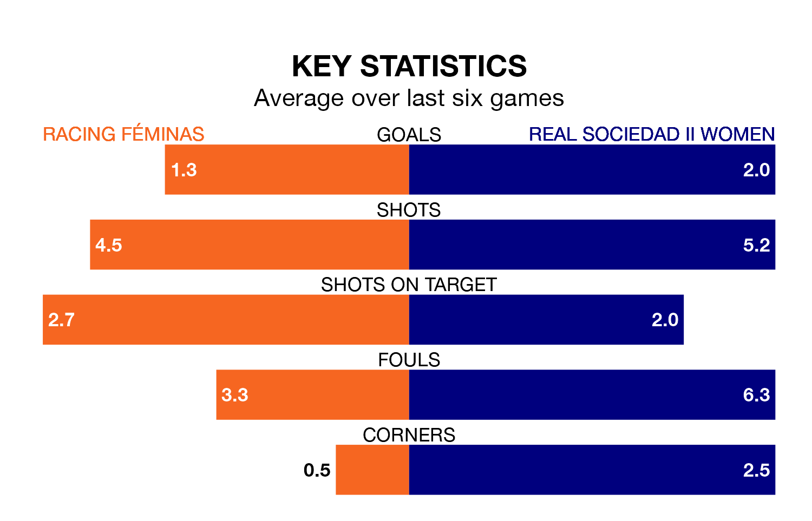

Racing Féminas host Real Sociedad II Women on Saturday in the Segunda Federación Femenina.
In their last league match, on April 27, Racing Féminas drew with Rayo Vallecano Women 1-1 away, with their goal scored by.
Sociedad II Women won, 3-1 at home against Osasuna II Women on Sunday, with (three) scoring their goals.
With 44 goals in 29 games so far this season, Sociedad II Women are scoring more than average in the league with 1.5 goals per game. And they are conceding at an average rate, letting in 39 goals at a rate of 1.3 per game.
Racing Féminas, meanwhile, are average scorers, with 1.3 goals per game. They have conceded 1.1 goals per game.
The away side are 12th in the table after 29 games, of which they have won 12 and drawn seven, earning 43 points.
The hosts are one place ahead of Sociedad II Women in 11th, with 11 wins and 10 draws putting them on the same number of points.
Racing Féminas are in mixed form in the Segunda Federación Femenina, with two wins and two draws from their last six games.
With four wins and two losses over that period, Sociedad II Women's form is better – they have taken 12 points from 18, compared to Racing Féminas's eight.
Updated: 10:44 (UTC), 30/04/24